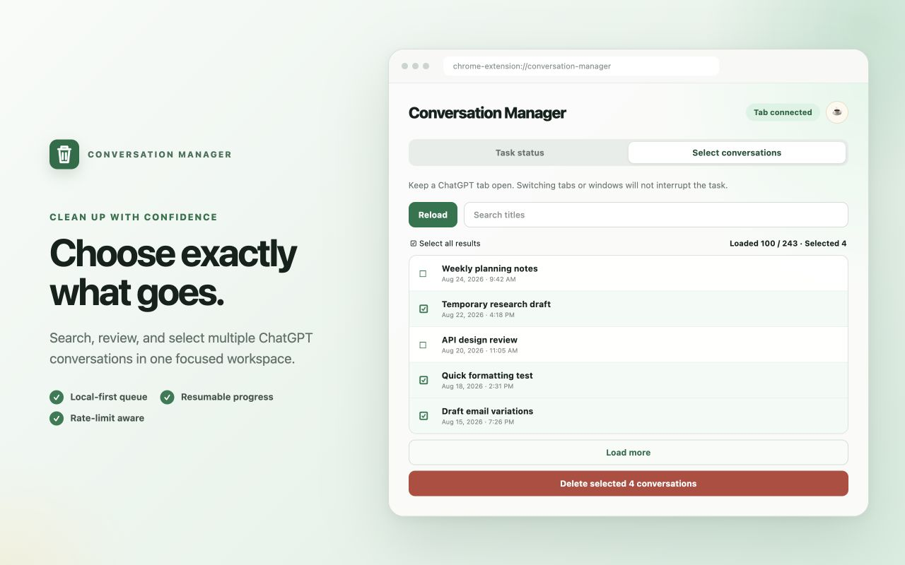

Select in batches
Load conversations in manageable groups, search titles, and choose exactly which items should be removed.
PRIVATE · PACED · RESUMABLE
Search, select, and delete multiple conversations from your own account with a queue that keeps its place while you switch tabs.

FOCUSED ON ONE JOB
Conversation Manager gives you a clear selection view and processes your choices at a responsible pace.
Load conversations in manageable groups, search titles, and choose exactly which items should be removed.
The local queue continues while you switch tabs or windows, as long as Chrome and a signed-in ChatGPT tab remain open.
Track completed, waiting, and failed items. Temporary limits trigger a longer cooldown instead of aggressive retries.